| 日付 | 2021年11月7日（日） |
|---|---|
| 山域 | 奥武蔵 |
| メンバー | 家族（妻、長女・10歳、長男・8歳） |
| 山行形態 | 子連れ日帰り |
| アクセス | 車 |
| ルート (Map) | 城山コース登山口 (9:17) - (11:16) 熊倉山 (11:56) - (13:34) 林道終点 - (14:02) 城山コース登山口 |
息子がやっているスポーツの大会が終わり、ようやく日曜がフリーになる。
安達太良山以来、1ヶ月振りに山に行くことにする。
近場の山に行きたかったが、どうも海沿いは天気が悪そうで、
内陸部の山から熊倉山を選択。
アクセスが不便で地味な山だが、一度は登っておきたい山だ。
城山コース登山口の駐車スペースに車を停める。標高600m。
すぐ側が登山口。山の名の通り、熊が出るようだ。
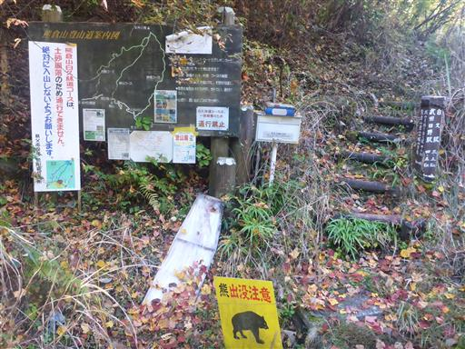
早速登山開始。
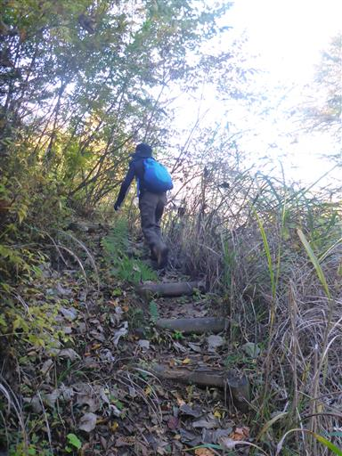
歩き始めてすぐに展望が広がる。これが最初で最後の展望だった。
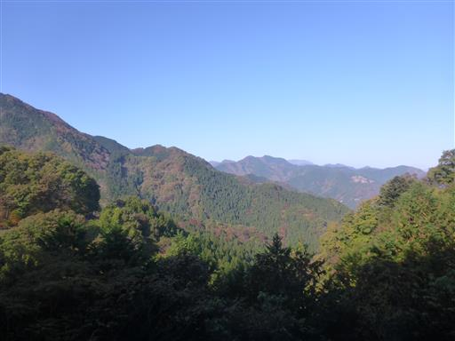
これでもかと言うほどの急斜面に付けられたジグザグ道を登って行く。
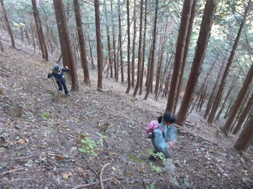
植林地帯を抜けると若干紅葉が見られる。
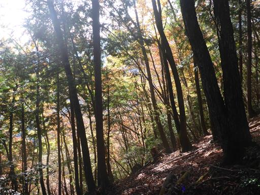
登山道は痩せ尾根になってくる。
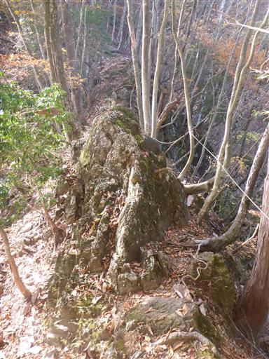
続いて岩を乗り越える。
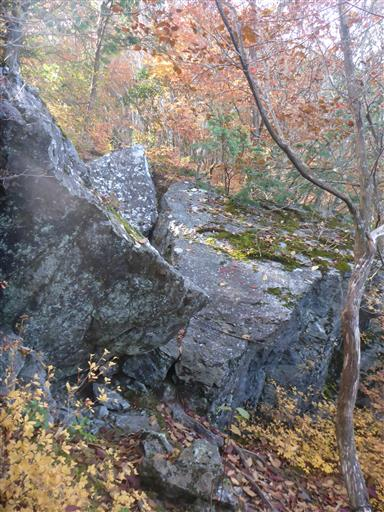
それなりに険しい登山道だ。
今回は尾根コースと沢コースの周回ルートを歩く予定だが、
尾根コースを登りに使う人が多いのは、この険しさが理由だろう。
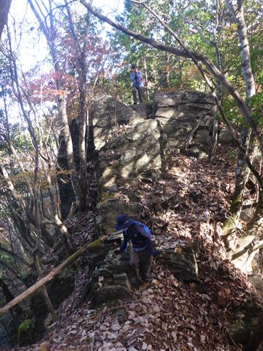
オレンジ色の紅葉。色のバリエーションは少ないが、ちょうど紅葉が見ごろだ。
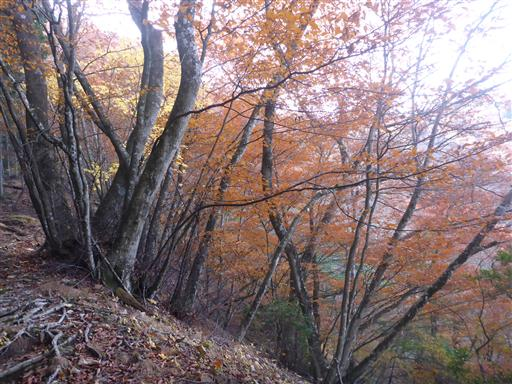
眼下に歩いてきた尾根を見下ろす。
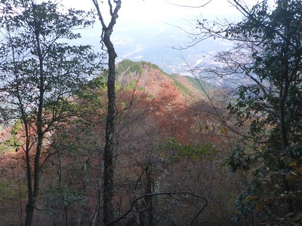
山頂直下の急斜面を登る。
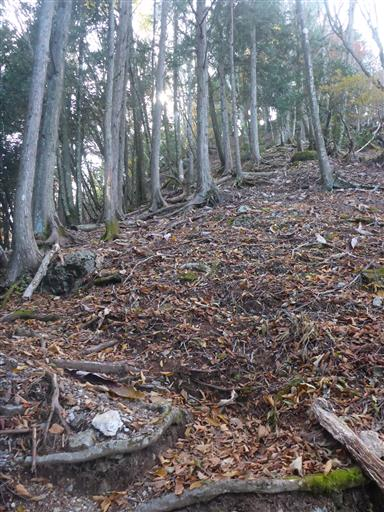
熊倉山山頂到着。標高1427m。
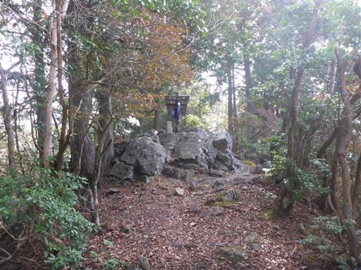
山頂標識の下にもう一つ山頂標識がある。
汚い字でインクも垂れているのだが、誰が設置したのだろう？
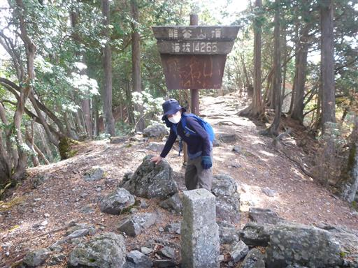
熊倉山から先も尾根道は続いている。
ここから3時間ほど歩けば奥多摩の酉谷山だ。
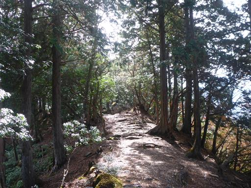
山頂からは展望が広がらない。
木の隙間からわずかに遠くの山々が見えるのみだ。
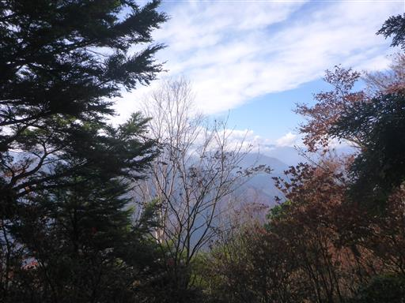
山頂で昼食をとったら下山開始。
歩くのにちょうど良い気温だが、山頂でじっとしていると結構寒かった。
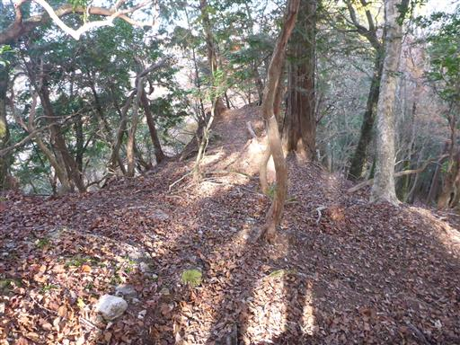
山頂直下の分岐点。ここから日野コースを下山する。
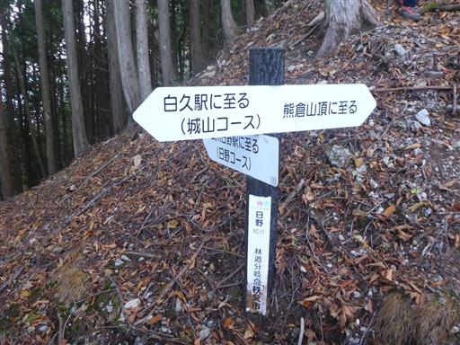
突然、斜面に突き立つ巨大な岩が現れる。
右側に転げ落ちそうだ。
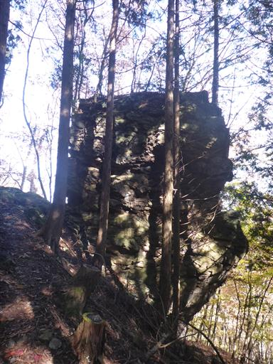
別角度から見てみる。なぜこんな岩ができたのだろう？
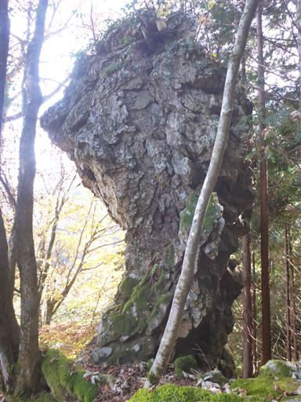
登山道の周囲に苔が出てくる。

かなり大きな苔だが、何という名なのだろう？
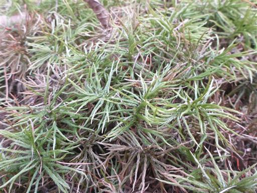
ロープを掴んで岩場を下る。
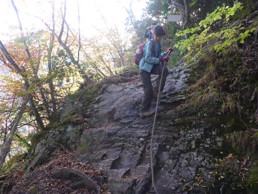
沢まで下りてくる。ここからは沢沿いの道だ。
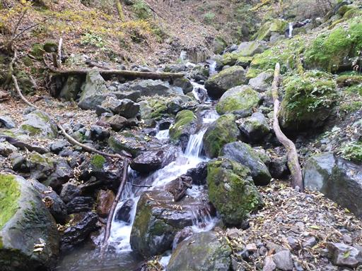
沢をジャンプで飛び越す。
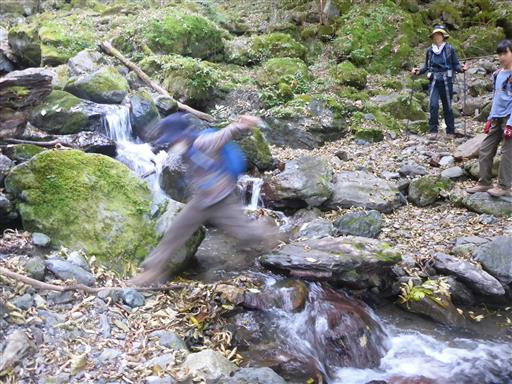
何度も渡渉がある。娘は渡渉が苦手で、そのたびに時間が取られる。
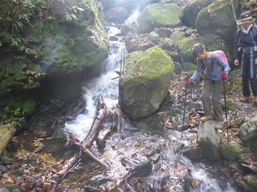
水は非常に澄んでいる。水の中の泡までよく見える。
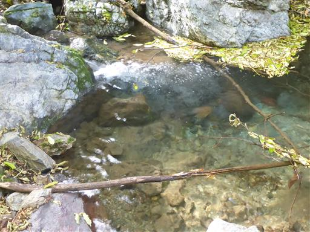
あちらこちらに小さな滝がある。
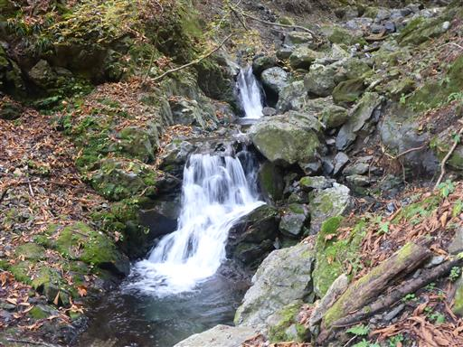
最後の渡渉。息子が娘に道を教えている。
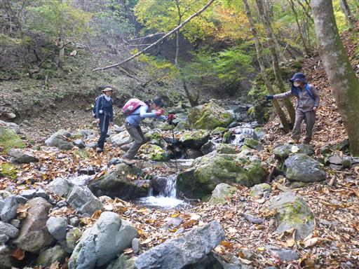
最後に階段を登って車道に出る。
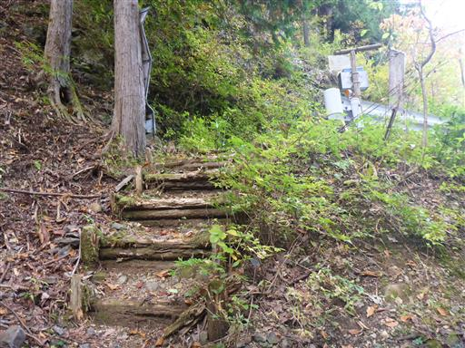
草に覆われた車道。荒れてはおらず、車は通れそうだ。
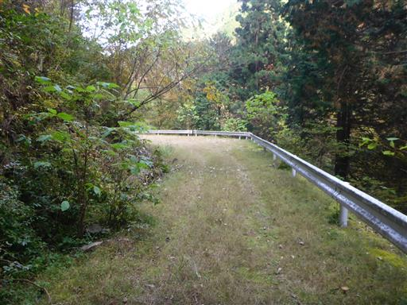
見上げると紅葉した山の斜面が見える。
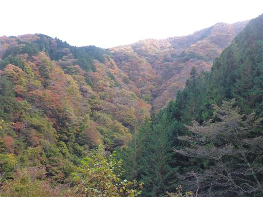
舗装道路に出てきたら、少し登って駐車場所に到着する。
熊倉山は地味な山で、山中で2名とすれ違っただけだった。
展望も全くなかったが、尾根コース、沢コースともそこそこの難易度で、
楽しんで歩くことができた。
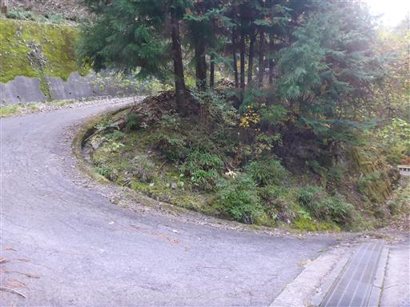